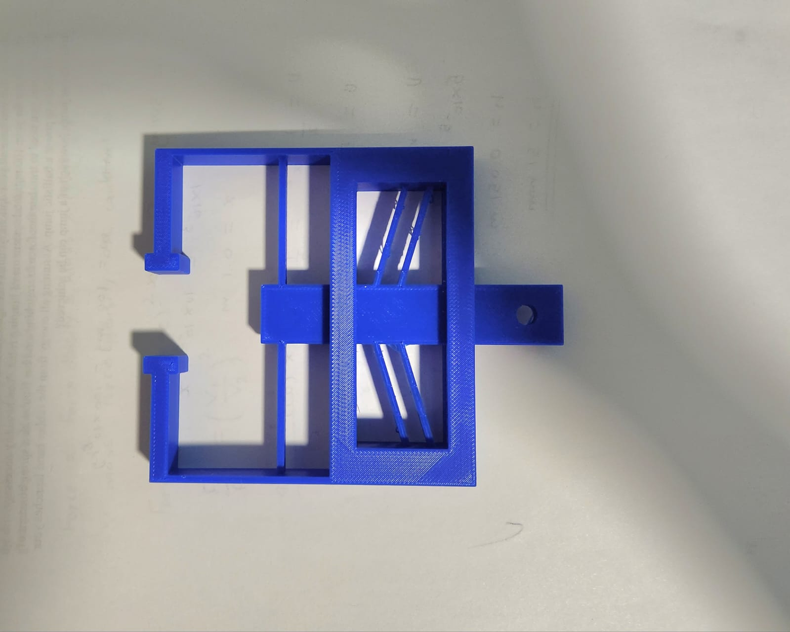
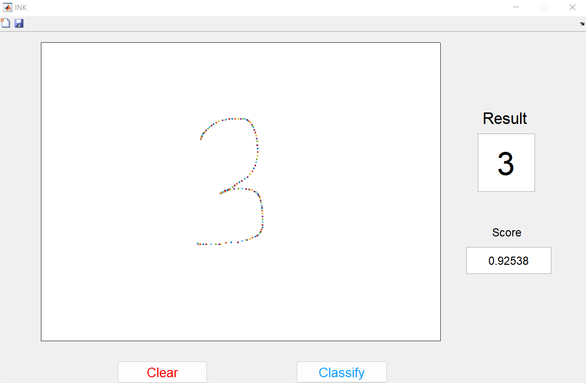
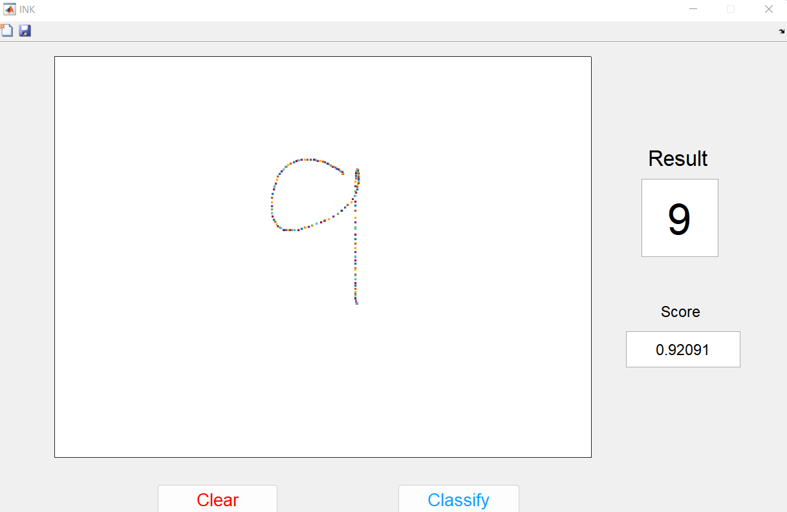

UB e-Portfolio
Domain Expertise with MAE Methods and Tools
1) Robotic exoskeleton for gait rehabilitation
Having taken a course in Musculoskeletal Biomechanics, I was interested in conducting research involving the human body and its movement. Hence, I joined the AWEAR lab at UB to work on an indivisual project that involved the design of a robotic exoskeleton that would improve the gait of patients with Cerebral palsy.
For this project, I was to perform various tasks.
- The first task involved the design and assembly of the mounting bracket for the servo motor, such that the motor position was adjustable in the X, Y, and Z axes. I designed this mounting bracket in 3D CAD using Autodesk Inventor and generated the bill of materials required for fabrication. Once the parts arrived, I assembled the mounting bracket in the lab and tested the frame for structural issues.
- The next task involved calibrating a 100 Lb Load cell to detect the tension in the system. I used known weights to calibrate the load cell and generated the plots and curve equations in MATLAB from the data.
- The next task asked for the circuit generation for connecting the motor, load cell, and servo controller. I generated the circuit layout and connected the devices together to complete the system. I was also able to include Force sensitive resistors in the controller in order to take in input data with some minor changes in the circuit. The skills I learned in my Mechatronics course really came in handy for this task.
- The final task required me to design a PID controller that will adjust the tension of the cable and provide an output motion to the exoskeleton. This controller was designed in NI-LabView using a NI-myRio-1900 FPGA module. The knowledge I gained in my Robotics course really allowed me to design the PID controller with ease.
The exoskeleton used a few 3D-printed parts which I had to design and develop that helped me gain knowledge in the additive manufacturing side. - During the testing, an input tension in the range of 15-20 Newtons (sine input) was used as the setpoint for the PID. With some tuning to determine the PID gain values, the controller was able to return a steady output tension to the exoskeleton with less than a 5% error. This allowed the exoskeleton to improve the gait by reducing the amount of force required to lift the foot.
I would say this project really allowed me to come out of my comfort zone and gain new experience and also allowed me to make use of various skills that I gained during my Master's degree.

2) Design of Compliant Mechanisms

3) Number Classification using 1-$ classifier
For my course in Intelligent CAD Interface, I had to develop a program that can classify the numbers as drawn on the screen by the user, using the application of machine learning.
The program was coded in MATLAB which used the 1-$ classifier algorithm. For this program to work, trial data was generated and the program was run against that data. This data was used as template for the classification of future data. Whenever the user gave an input with a digit of thier choice the program could perfectly identify it and displayed the result.
I was successful in achieving 100% positive results for all digits from 0-9 without any improvement needed.
This project helped me gain understanding of Machine Learning and its practical application in real life.
 